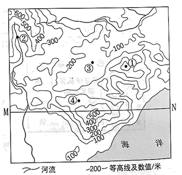

2023年北京中考地理 第2题 解析
2. 图中自然景观差异的形成，主要是由于（ ）
A. 地球运动B. 地球形状C. 海陆变迁D. 海陆分布
【答案】1. B 2. A
【解析】
【1题详解】
图中①为清明节，踏青郊游，亲近自然。②为端午节，吃粽子，赛龙舟。③为中秋节，赏月亮，吃月饼。④为春节，辞旧迎新，贴春联，守岁，拜年。综上所述，B正确，ACD错误，故选B。
【2题详解】
图中不同节气自然景观差异，是由于地球公转运动导致了四季变化，春季百花争艳，夏季绿树成荫，秋季凉风习习，冬季大雪纷飞，A正确。与地球形状、海陆变迁、海陆分布无关，BCD错误。故选A。
【点睛】地球公转产生的现象有：①正午太阳高度的变化②昼夜长短的变化③四季的更替④五带的划分。
等高线地形图是认识地表高低起伏的地理工具。图为某地等高线地形图。读图，完成下面小题。
